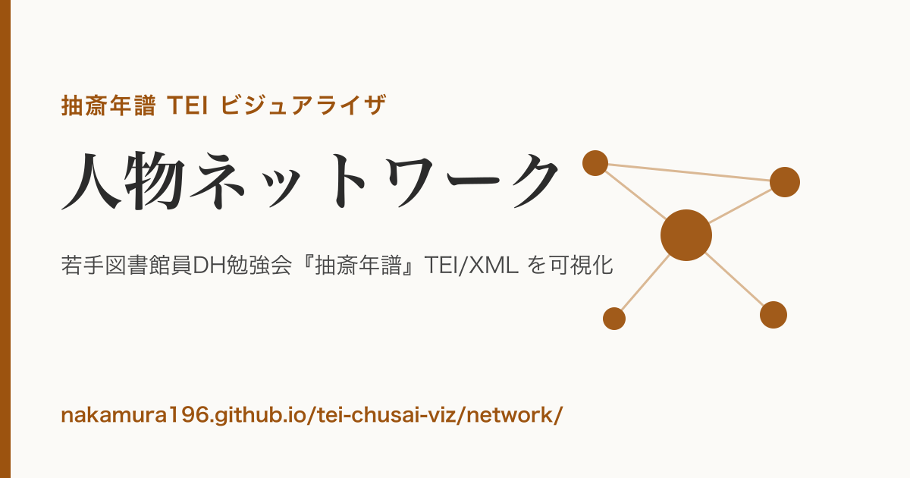
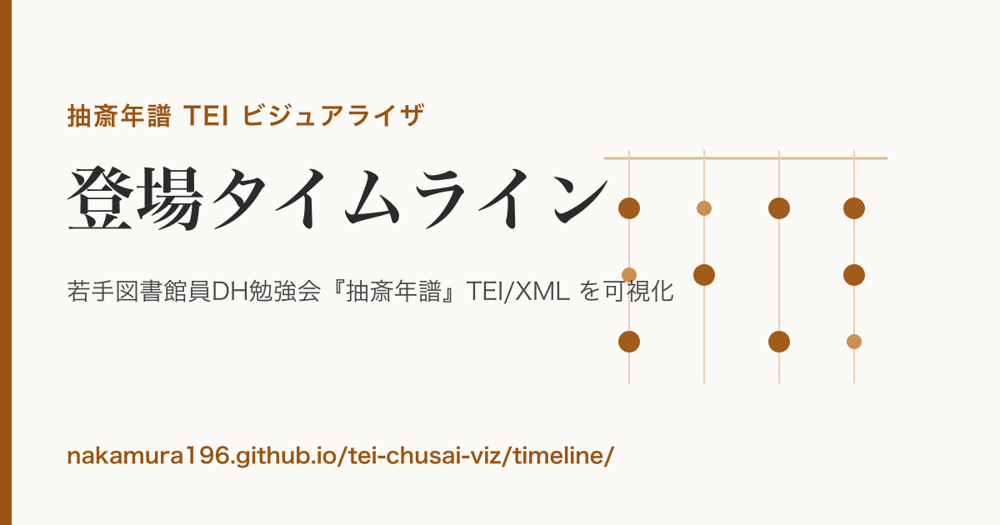
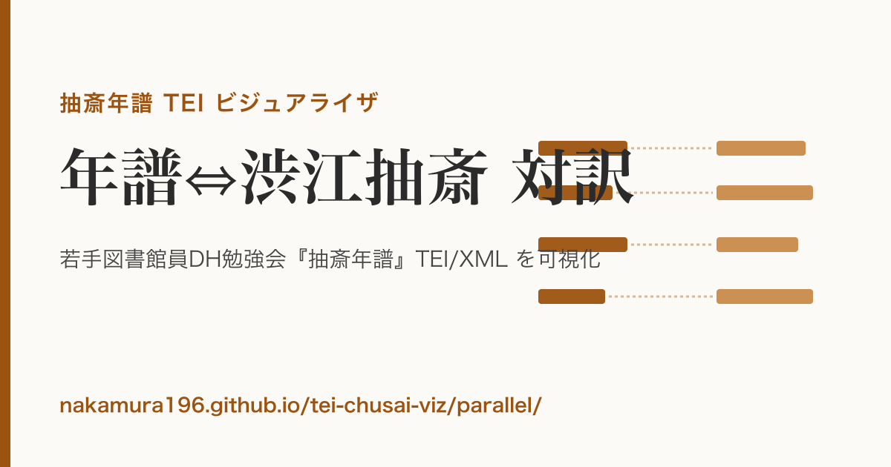

お知らせ
- 各機能を個別ページに分割し、OGP／SEO を整備しました（特定のビューを直接リンク・共有しやすくなりました）。
- 「抽斎年譜 TEI ビジュアライザ」を公開しました。

人物ネットワーク
同じ年次に登場した人物どうしを結ぶ共起グラフ。中心人物や渋江家と弘前藩主の関係が見えます。

登場タイムライン
主要人物が抽斎の生涯（1805–1862）のどの年に登場するか。記述の濃淡や関係の推移を追えます。

年譜⇔渋江抽斎 対訳
『抽斎年譜』と森鷗外『渋江抽斎』の対応箇所を4列（原文＋現代語訳）で対照。
データに関する注記
本サイトは原データ（CC BY 4.0）を改変せず読み込み、表示側で補正・名寄せを行っています。
- 解釈上の限界：ネットワークの「共起」は同じ年次に年譜へ登場した意味で、各年内を総当たりで結ぶため記述の濃い年が機械的に多数のエッジを生みます（直接の交流・血縁ではありません）。タイムラインの点は「その年に言及された」ことを示し、回顧的言及（祖先の生年・子孫の没年など）を含みます。
- 現代語訳：対訳の現代語訳は AI による下書きで、固有名詞・年号を含め未校閲です。
- 原データの既知課題（修正PR提出済み）：和暦→西暦
@whenの一部誤り、人物@correspの表記ゆれ・#欠落、対訳アンカーの欠落など。詳細は README および 元リポジトリへの PR を参照。